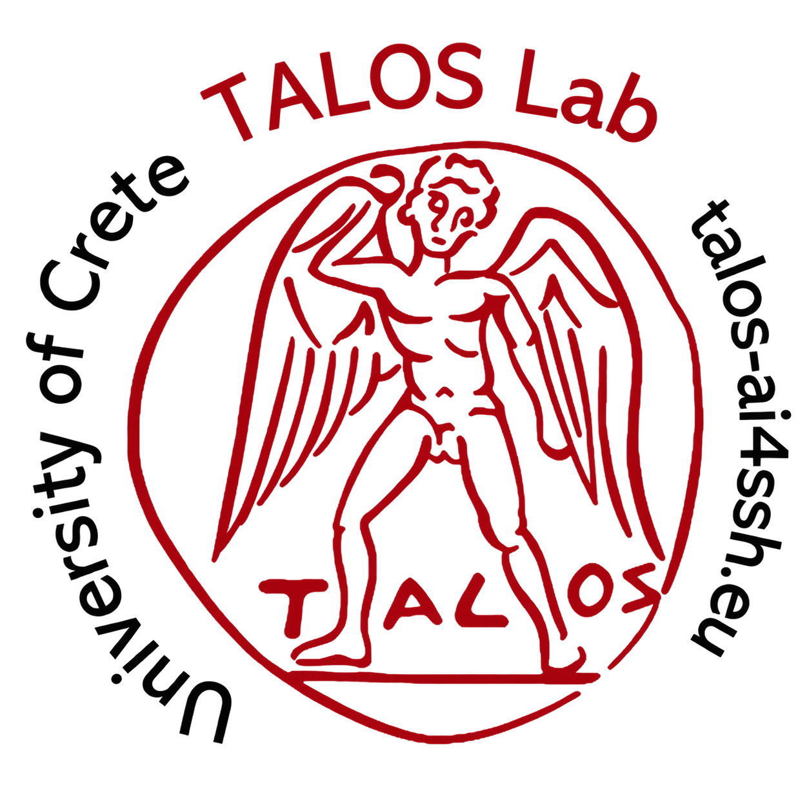

The text
Browse and search the Greek text, English translation, and indexed entities.
Browse the edition
Laertius Digital Scholarly Edition Open the editionDiogenes Laertius · Lives of Eminent Philosophers
The Lives and Opinions of Eminent Philosophers. A digital scholarly edition of Diogenes Laertius: read the Lives in Greek and English, search sayings and doctrines semantically, and explore a structured knowledge graph. Results are cited by book and section.
Diogenes Laertius · trans. R.D. Hicks (1925)
ENTER THE EDITIONDiogenes Laertius does not transmit a neutral inventory of facts. The Lives preserves named authorities, anonymous reports, rival versions, anecdotes, sayings, letters, wills, catalogues, and doxographical summaries. The edition keeps these textual voices visible instead of collapsing them into undifferentiated statements.
Each passage remains available for conventional close reading while its persons, works, schools, concepts, textual forms, and source relations become computationally accessible. Structured semantic data thereby extends the critical edition without replacing the text on which its interpretations depend.
Curated annotations connect the wording of the Lives to a source-critical assertion model. Every claim can retain its speaker, textual location, topic, degree of certainty, and—where the text requires it—another assertion nested within it.
Release v25 · 207,634 triples in the RDF store.
Browse and search the Greek text, English translation, and indexed entities.
Browse the editionExplore verses, sayings, doxai, anecdotes, letters, and testaments.
Explore the genresMove through the knowledge graph, timeline, and map of the philosophical corpus.
Explore the graphQuery the edition through evidence-grounded answers, competency questions, and assertions.
Ask LaertiusThe evaluation corpus contains 200 questions: 175 answerable topics and 25 abstention cases covering out-of-corpus questions, false premises, and underspecified homonyms. This design tests both the recovery of relevant evidence and the system's ability to withhold an unsupported answer.
Related evaluation infrastructure
A companion resource of Humanistica Digitalia for the comparative evaluation of named-entity recognition and entity-linking workflows. It is presented as a related benchmark, distinct from the Laertius question-answering gold set.
Open the NER/NEL Benchmark